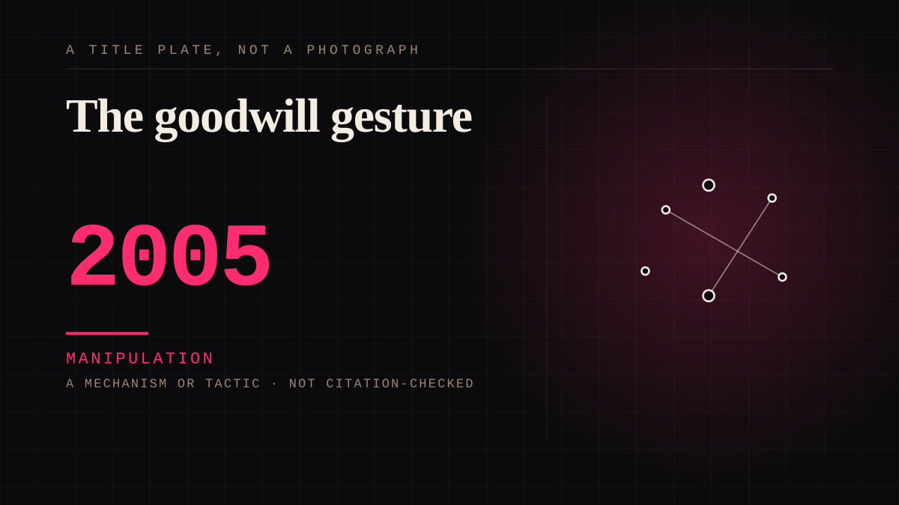

A mechanism or tactic · 2005 · Platforms
The goodwill gesture
When a service ends or changes, the company sends an apology, sometimes with credit, addressed personally.

A corporation performing grief at its own users, correctly, because the users are grieving. The apology is not insincere and the technique is nonetheless the most sophisticated parasocial manipulation on this page, and it is free.
Manipulation. One-sided attachment engineered for somebody else's benefit. Paid intimacy, parasocial persuasion, sasaeng, grief extraction, the streak. The lane that pays the bills and the lane that causes the most harm, frequently at the same time.
Where it sits
2000 2000-2009 · 2005 2009
Provenance · 3 source record(s)
- retrievableThe mechanism, its vocabulary, and the detail the entry's argument depends on. Google's line: 'We know Reader has a devoted following who will be very sad to see it go. We're sad too.' Within hours more than 46,000 people had signed a Change.org petition, and its author stated the entry's thesis outright: 'This isn't just about our data in Reader. This is about us using your product because we love it, because it makes our lives better, and because we trust you not to nuke it.' And the commercial fact underneath it: 'The feeds are also difficult to make money from, and Google never tried to place ads on Reader or charge for its use.'Gross, D. (2013, March 14). Google Reader shutting down on July 1. CNN Business. ↗
- retrievableThe grief, and its object. A user describes Reader as the first site he saw each morning and the last before bed, likens losing it to a favourite old bookshop closing, and then locates the real loss precisely: 'I won't miss Reader when it shuts down. But I will miss the old me - the person I described in Google Reader, without knowing it.' Which is this site's grief entry turned inside out: what was mourned was not the company but a version of the person who had used it.Rothman, J. (2013, March 15). Farewell, Dear Reader. The New Yanker's Page-Turner. ↗
- retrievableThe service's own send-off and the reason given: Reader launched in 2005, would be retired on 1 July 2013, and Google told users 'Thanks for 8 great years!' - which is where this entry's 2005 date comes from. Usage had declined while other services were cut in the same spring cleaning, and Reader had been left without significant updates.Sottek, T. (2013, March 13). Google Closes The Book On Google Reader On July 1. TechCrunch. ↗
Not yet stood behind. The entry is real. A person has not read the citation and confirmed it, so treat the date as approximate until they do.
Connected · 2 out, 2 in
It sits in
The full timeline → · The database → · See it in the atlas →